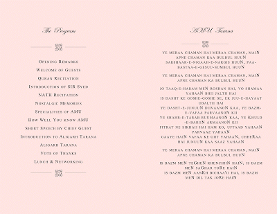
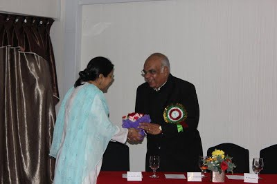

****The First Sir Syed Day Celebrations, 2012, Singapore****
https://sites.google.com/site/babnazir/first-sir-syed-day-2012-singapore-1
The Chief Guest
Alig Mr George Abraham,
Chairman & M.D,
The GA Group Pte Ltd,Singapore
Mr
George Abraham is a Singaporian Alig. Born and brought up in Singapore,
he spent his formative years in AMU in 1968-1973, where he stayed
in Kuwait house in Sir Sulaiman Hall . He did M.A. in Political
Science from Aligarh Muslim University, and was batch-mate of late Prof Farhan
Mujeeb. He was active member of riding club. He has
AMU Tarana saved in his mobile and still ensures a supply of
"Matri" from Aligarh.Interestingly, he met his wife Dr Grace Abraham
in AMU, who was a foreigner medical student pursuing MBBS from JN Medical college,
AMU. He gave an emotional speech as a Chief guest of First Sir Syed
Day Celebrations, Singapore, 2012. He brought along old Books, souvenirs and
letters from teachers of his AMU days.
Mr Abraham is also MSc from the University of Singapore and a MA in HRD
from the George Washington University in U.S.A.
Mr. Abraham has been the Executive Director of the Singapore Indian
Chamber of Commerce and Industry, Hon. Secretary General of the Singapore
Federation of Chambers of Commerce and Secretary General of the ASEAN
Chambers of Commerce and Industry. He is a consultant to various UN
Agencies(ILO, ESCAP, UNDP and World Bank’s MIGA). He is the Regional
Representative (ASEAN) of the Federation of Indian Chambers of Commerce
& Industry (FICCI) and of Georgian Chamber of Commerce
and Industry.
Currently, he is Director of The Indus Entrepreneurs Limited, Singapore
(TiE Singapore), Chairman of the SME Development Council of the Confederation
of Asia-Pacific Chambers of Commerce & Industry (CACCI) and
past Chairman of the Feedback Group on Economic Development, of
Singapore’s Ministry of Community Development, Youth and Sports from 2000-2007
and on the Resource Panel of the Singapore Government Parliamentary
Council for Trade & Industry till 2009.


EVENT PICTURES



AGENDA
FOR 2013
Fund raising for scholarship for Civil Services Coaching
EVENT DETAILS
Date: October
21, 2012 (Sunday)
Venue: Bayview
restaurant,
East Coast Park,
Singapore.
Time: 12.00 noon
(sharp)